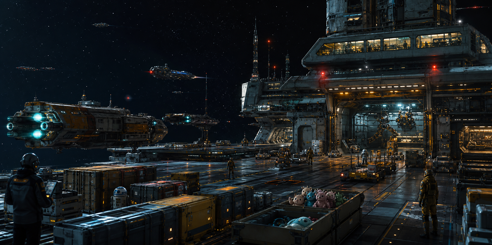

Convoy Logistics
Multi-ship freight coordination with route plans, ETAs, delay tracking, and escort readiness.

Outer sector freight, command, and station support
Reliable freight, station support, convoy coordination, and classified cargo handling across the outer sectors.
What we move
Every shipment travels with route intelligence, crew readiness, station health, trade paperwork, and the right clearance envelope.
Multi-ship freight coordination with route plans, ETAs, delay tracking, and escort readiness.
Containment-aware handling for nanite swarms, plasma cores, classified prototypes, and suspiciously opinionated appliances.
Food, medical supplies, engineering parts, oxygen-sensitive goods, and the occasional morale-critical taco crate.
Partner manifests, credit values, counterparty notes, and handoffs between research labs, colonies, and mining collectives.
Quiet, documented transfer of sensitive cargo for embassies, accord signatories, and command-approved liaisons.
Rapid reroutes, damaged-array dispatches, crew rotation updates, and high-priority freight under changing alert conditions.
Why operators trust us
Deckhands see what they need, logistics officers see the movement layer, and admirals keep command objectives sealed.
When a lead vessel stalls at checkpoint Hydra-4, the manifest, cargo risk, and repair notes stay connected.
Outpost Gamma keeps Waystation Delta, Kepler Research Station, Nebula-7, and the outer colonies moving.
Operations snapshot
Comfortably breathable. Engineering requests that everyone stop calling it "luxury air."
Shield grid nominal
Ion storm repair pending
Nebula-9 arrival window
Credits under active and pending manifests
Manifest highlights
Low hazard, high crew approval, messy under low gravity.
Priority resupply for remote stations and field clinics.
Medium hazard. Do not debate breakfast ethics during docking.
Critical classification. Admiral clearance and excellent posture required.
About Galactic Logistics
Galactic Logistics operates the freight backbone around Outpost Gamma: disciplined enough for High Command, practical enough for working crews, and patient enough to explain why a cloaking device prototype cannot ride beside hydroponic seeds without paperwork.
Partner operations API
Partners can integrate with station status, crew readiness, cargo manifests, convoy tracking, trade contracts, and classified fleet workflows through a clearance-aware operations API.
Station status, systems, crew roster, and cargo index.
Crew details, cargo handling, shipments, and trade manifests.
Fleet orders, active missions, and Admiral-classified records.